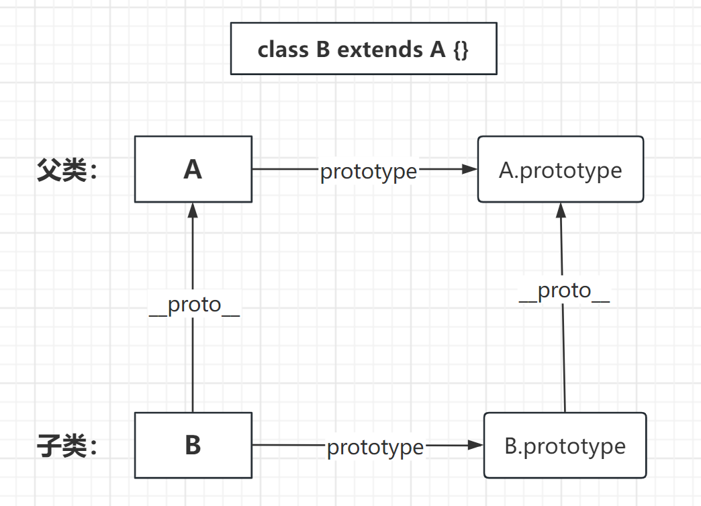

一、初始 Class 类
什么是类
类可以看做是对象的模板，用一个类可以创建出许多不同的对象。
如下：类 对象 人 小明，小红，清心，arry 鸟 麻雀、鹦鹉、鸽子、燕子、画眉 狗 柴犬、法斗、英斗、拉布拉多、边牧 Class 类的由来
JavaScript语言中，生成实例对象的传统方法是通过构造函数。function Point(x, y) { this.x = x; this.y = y; }Point.prototype.toString = function () {
console.log((${this.x},${this.y}));
};
let point = new Point(1, 2);
point.toString(); // (1,2)- 上面这种写法跟传统的面向对象语言（比如 C++ 和 Java）差异很大，很容易让新学习这门语言的程序员感到困惑。
ES6提供了更接近传统语言的写法，引入了Class（类）这个概念，作为对象的模板。通过class关键字，可以定义类。
基本上，ES6的class可以看作只是一个语法糖，它的绝大部分功能，ES5都可以做到，新的class写法只是让对象原型的写法更加清晰、更像面向对象编程的语法而已。
- 上面的代码用
ES6的class改写，就是下面这样。// 定义一个Point 类 class Point { constructor(x, y) { this.x = x; this.y = y; } toString() { console.log(`(${this.x},${this.y})`); } } let point = new Point(1, 2); point.toString(); // (1,2)上面代码定义了一个“类”，
- 可以看到里面有一个
constructor()方法，这就是构造方法，内部的this关键字则代表实例对象。- 这种新的
Class写法，本质上与本章开头的ES5的构造函数Point是一致的。Point类除了构造方法，还定义了一个toString()方法。- 定义**”类”的方法**时，前面不需要加上
function这个关键字，直接把函数定义放进去了就可以了。- 另外，方法与方法之间不需要逗号分隔，加了会报错。
ES6的类，完全可以看作构造函数的另一种写法。
- Class 类的基本用法
语法
// 类的声明是 class + 类名{} // class 是关键字 // Person 是类名一般首字母大写 class Person {}基本用法：
- 一般在构造方法中定义属性，不会定义方法，
- 因为会造成方法不能共享
- 而且会在内存中开辟不同的空间来存储，每
new一个新的对象就会多开辟一个空间，非常浪费资源和消耗内存的，严重影响性能
- 建议在Class类内部定义各个实例共享的方法
class Person { constructor(username, age) { this.username = age; this.age = age; //不推荐这样定义方法 this.sayHello = () => {}; }// 各实例共享的方法
eat() {
console.log(“Eat apples”);
}
}const qxin = new Person(“清心”, 19);
// 调用方法
qxin.eat(); // Eat apples
const allen = new Person(“allen”, 18);
// 调用方法
allen.eat(); // Eat apples//arry对象和allen对象的 eat 方法不相等,说明它们不是同一个引用
console.log(arry.sayHello === allen.sayHello); //false
// arry对象和allen对象的 eat 方法 此时就是相等的，即同一个引用
console.log(qxin.eat === allen.eat); // true- 一般在构造方法中定义属性，不会定义方法，
- 以上 ES6 的类，完全可以看作传统构造函数的另一种写法。如下
function Person(username, age) { this.username = username; this.age = age;
// 注意：同理，一般只会在构造函数中定义属性，方法不在构造函数中定义
// this.sayHello = () => {};
}
Person.prototype.eat = function () {};
- 类的数据类型就是函数，类本身就指向构造函数。写在 Class 类内部的方法，本质就是写在构造函数的原型上
class Person { constructor(username, age) { this.username = age; this.age = age; } eat() { console.log("Eat apples"); } }
// 通过以下类型判断和对比看到，类的数据类型就是函数，类本身就指向构造函数。
console.log(typeof Person); // function
console.log(Person === Person.prototype.constructor); // true
// 同样可以在 Person 的原型对象上找到 eat 方法
console.log(Person.prototype.eat);
- constructor 方法
// 等同于constructor方法是类的默认方法，通过new关键字生成对象实例时会自动调用该方法。- 一个类必须有
constructor方法，如果没有显示定义，则会默认添加的一个空的constructor方法
class Point {}
class Point {
constructor() {}
} - 一个类必须有
注意：
constructor方法默认返回实例对象(即this)，不过可以人为指定返回一个新对象——修改return，不过必须返回的是对象- 如果
constructor的返回值人为指定非引用数据类型，则其返回值采用默认值（实例对象）class Point { constructor(x, y) { this.x = x; this.y = y; return [1, 2, 3]; // new Point()后返回值为 该数组 // return function () {}; // new Point()后，返回值为该函数 // return 12; // 不起作用，new Point()后，默认返回实例对象 } }
const point = new Point(2, 2);
console.log(point); // [1, 2, 3]
- Class 的两种写法
- 声明形式（重点学习这个）也是最常用的，以上讲的就是
- 表达式形式（了解即可）
Class 的声明形式
class Person { // 构造方法 constructor() {}// 自定义方法
eat() {}
}表达式形式（了解即可）
const MyPerson = class Person { constructor() { console.log("执行构造方法 ！"); } eat() {} };// 真正有效的类名为 MyPerson 而非 Person
// new Person(); 报错
new MyPerson();// 所以表达式写法，可以简写如下
const MyPerson = class {
constructor() {
console.log(“执行构造方法 ！”);
}
eat() {}
};
new MyPerson();表达式形式的用法：
- 模拟立即执行函数，来模拟立即执行的类（了解即可）
// 回顾，立即执行函数的写法 const fn = (function () { console.log("foo"); })(); // 类似常规调用执行一个函数 fn()// 立即执行的类（模拟立即执行函数而来）
const Person = new (class {
constructor() {
console.log(“执行构造方法 ！”);
}
})();
// 类似执行 new Person()
二、Class 类的属性和方法
实例属性
类的实例对象身上的属性称为实例属性。
- 直接定义在类内部的最顶层或在
constructor()方法中用this定义的属性class Person { // 实例属性 age = 33; constructor(username, sex) { // 实例属性 this.username = username; this.sex = sex; } }
const p = new Person(“清心”, “女”);
console.log(p); // Person {age: 33, username: ‘清心’, sex: ‘女’}
- 上面代码中，实例属性`age`直接定义在类内部，实例属性`username`和`sex`定义在`constructor()`方法里面的`this`上面。 - 上面的实例属性`age`是实例对象自身的属性，并不是在实例对象的原型上面。
实例方法（原型方法）
直接定义在类里面的方法，本质就是定义在类的原型上，供类的所有实例对象共享，即为实例方法（或原型方法）
- 或在
constructor方法中用this定义的方法，为实例方法，但这种方式定义的方法没有办法共享，内存占用过大，通常不用，只做了解。class Person { constructor(username) { this.username = username; // 实例方法-不推荐使用，只做了解 this.sayHello = function () { console.log(`大家好，我是${this.username}`); }; } // 原型方法（实例方法） eat() { console.log(`${this.username}正在吃苹果`); } }
const p = new Person(“清心”);
console.log(p);
私有属性
所谓私有属性是指：只能在类的内部访问的属性，外部不能访问。
- 即构造函数的内部或原型方法的内部可以访问的属性。
ES5 写法
面试题：
- 如何用
ES5实现ES6的class的static和private（百度）在 ES6 之前不提供相关私有属性的写法，只能通过变通方式来模拟实现。
| 方法 | 缺点（或优点） |
|---|---|
在属性名前加_来区分 |
这种方式只是人为约定的一种写法，但并不保险 ，在类的外部还是可以访问 |
| 将变量移到构造函数外，利用闭包来实现 | 这种方式所有实例对象操作的是同一个私有属性。本质上不能算是模拟私有变量。（当作了解） |
利用 Symbol |
值的唯一性，将变量名改为 Symbol 类型 相对安全，但是如果非要访问，也是可以在类的外部访问到。比如：getOwnPropertySymbols()或Reflect.ownKeys()都可以拿到 |
利用 weakMap 来实现 |
非常完美如果有多个私有属性，则要把所有私有属性绑定到一个对象上。 |
在变量名前加_来区分私有属性和实例属性
- 这种方式只是人为约定的一种写法，但并不保险 ，在类的外部还是可以调用
function Person(username, age) { this._money = 2000; // 模拟私有属性 this.username = username; // 实例属性（公有属性） this.age = age; // 实例属性（公有属性） }const p = new Person(“清心”, 33);
console.log(p._money); // 2000 以下划线形式访问，依然可以访问到// class类中
class Person {
constructor(username, age) {
this._money = 2000;
this.username = username;
this.age = age;
}
}const p = new Person(“清心”, 33);
console.log(p._money); // 2000 以下划线形式访问，依然可以访问到将变量移到构造函数外，利用闭包来实现
- 这种方式所有实例对象操作的是同一个私有属性。
const Person = (function () { let _money = 2000; // 模拟私有属性function Person(username, age) {
this.username = username; // 实例属性（公有属性）
this.age = age; // 实例属性（公有属性）
}
Person.prototype.getMoney = function (number) {
_money -= number;
console.log(取出${number}元，账户剩余${_money}元);
};
return Person;
})();const p1 = new Person(“清心”, 33);
p1.getMoney(200); // 取出200元，账户剩余1800元
const p2 = new Person(“arry”, 33);
p2.getMoney(300); // 取出300元，账户剩余1500元- 以上`p1`和`p2`本质上操作的都是同一个变量`_money`。本质上不能算作是实例对象的属性，更像是一个局部变量。// Person.js文件
// class类中 ，模块化导出
let _money = 2000; // 模拟私有属性
export default class Person {
constructor(username, age) {
this.username = username; // 实例属性（公有属性）
this.age = age; // 实例属性（公有属性）
}
getMoney(number) {
_money -= number;
console.log(取出${number}元，账户剩余${_money}元);
}
}利用
Symbol值的唯一性，将属性名改为Symbol类型let _money = Symbol("账户"); // 创建Symbol类型 function Person(username, age) { this[_money] = 2000; // 模拟私有属性 this.username = username; // 实例属性（公有属性） this.age = age; // 实例属性（公有属性） } Person.prototype.getMoney = function (number) { this[_money] -= number; console.log(`取出${number}元，账户剩余${this[_money]}元`); };const p = new Person(“清心”, 33);
const money = Object.getOwnPropertySymbols(p)[0]; // 获取Symbol属性值
p[money] = 4000; // 修改属性值
p.getMoney(200); // 取出200元，账户剩余3800元- 这种方式还是能拿到私有属性，所以一般会再套一层函数，利用闭包实现
- class 类的写法
// Person.js文件 let _money = Symbol("账户"); // 创建Symbol类型 export default class Person { constructor(username, age) { this[_money] = 2000; // 模拟私有属性 this.username = username; // 实例属性（公有属性） this.age = age; // 实例属性（公有属性） } getMoney(number) { this[_money] -= number; console.log(`取出${number}元，账户剩余${this[_money]}元`); } } <script type="module"> import Person from "./Person.js"; const p = new Person("清心", 33); const money = Object.getOwnPropertySymbols(p)[0]; // 获取Symbol属性值 p[money] = 4000; // 修改属性值 p.getMoney(200); // 取出200元，账户剩余3800元 </script>
- 利用 WeakMap 来实现
const p = new Person(“清心”, 33);如果有多个私有属性，则要把所有私有属性绑定到一个对象上。对于私有属性有一个统一的管理
const privates = new WeakMap(); // 用来保存私有属性 function Person(username, age) { privates.set(this, { _money: 2000 }); this.username = username; // 实例属性（公有属性） this.age = age; // 实例属性（公有属性） } Person.prototype.getMoney = function (number) { if (privates.has(this)) { privates.get(this)._money -= number; } console.log(`取出${number}元，账户剩余${privates.get(this)._money}元`); };
p.getMoney(200); // 取出200元，账户剩余1800元
ES6 写法
ES2022正式为class添加了私有属性，其写法是在属性名之前使用#号表示。
- 私有属性可以先指定初始值，也可以不指定。
class Person { #money = 2000; // 私有属性 定义同时赋初始值 #count; // 私有属性，没有赋初始值 constructor(username, age) { this.username = username; // 实例属性（公有属性） this.age = age; // 实例属性（公有属性） } getMoney(number) { // 访问私有属性时，要注意用this打点来访问 this.#money -= number; console.log(`取出${number}元，账户剩余${this.#money}元`); } }
const p = new Person(“清心”, 33);
p.getMoney(200);
console.log(p);
// console.log(p.#money); // 报错
- 上面的`#money`就是私有属性，只能在类的内部使用`(this.#money)`，如果在类的外部读取或写入私有属性`#money`，就会报错。console.log(p.#money); // 报错
p.#money = 300; // 报错
注意：
- 如果读取一个不存在的私有属性，不管在类的内部或外部，都会报错，这一点与实例属性不同。
- 访问一个不存在的实例属性返回
undefined，写入一个不存在的实例属性，相当于给对象添加一个新属性。
私有方法
所谓私有方法是指：只能在类的内部访问的方法，外部不能访问。即构造函数的内部或原型方法的内部可以访问的方法。
ES5 的构造函数中模拟私有方法的写法
- 在 ES6 之前不提供相关私有方法的写法，只能通过变通方式来模拟实现。
| 方法 | 缺点或优点 |
|---|---|
在方法名前加_来区分 |
这种方式只是人为约定的一种写法，但并不保险 ，在类的外部还是可以调用 |
| 将方法移出构造函数，利用闭包来实现 | 需要用 call 方法，改变函数内部的 this 指向 |
利用 Symbol |
值的唯一性，将方法名改为 Symbol 类型 相对安全，但是如果非要访问，也是可以在类的外部访问到。比如：getOwnPropertySymbols()都可以拿到 |
利用 WeakMap 来实现 |
如果有多个私有属性，则要把所有私有属性绑定到一个对象上。注意用bind来改变函数内部的 this 指向 |
在方法名前加
_来区分- 这种方式只是人为约定的一种写法，但并不保险 ，在类的外部还是可以调用
function Foo(x, y) { this._x = x; this._y = y; } // 模拟私有方法 Foo.prototype._sum = function () { return this._x + this._y; };// 公有方法
Foo.prototype.printSum = function () {
console.log(this._sum());
};const foo = new Foo(2, 4);
foo.printSum();
console.log(foo._sum()); // 本质上还是能访问到将方法移出构造函数，利用闭包来实现
const Foo = (function () { // 构造函数 function Foo(x, y) { this._x = x; this._y = y; }// 模拟私有方法
function _sum() {
return this._x + this._y;
}// 公有方法
Foo.prototype.printSum = function () {
console.log(_sum.call(this));
};
return Foo;
})();const foo = new Foo(2, 4);
foo.printSum();利用 Symbol 值的唯一性，将方法名改为 Symbol 类型
- 相对安全，但是如果非要访问，也是可以在类的外部访问到。比如：
getOwnPropertySymbols()都可以拿到
const Foo = (function () { const s = Symbol(); // 构造函数 function Foo(x, y) { this._x = x; this._y = y; } // 私有方法 方法名为Symbol类型 Foo.prototype[s] = function () { return this._x + this._y; }; // 公有方法 Foo.prototype.printSum = function () { console.log(this[s]()); }; return Foo; })();const foo = new Foo(2, 4);
// 获取原型上的Symbol类型的属性
let s = Object.getOwnPropertySymbols(foo.proto)[0];
console.log(foos); // 6>注意：这里使用`getOwnPropertySymbols()`的方式与模拟私有属性那不同；这里要到构造函数的原型上拿- 相对安全，但是如果非要访问，也是可以在类的外部访问到。比如：
利用 WeakMap 来实现
const Foo = (function () { let privates = new WeakMap(); // 构造函数 function Foo(x, y) { this._x = x; this._y = y; // 特别注意要用bind改变函数内部的this指向 privates.set(this, _sum.bind(this)); } // 私有方法 function _sum() { return this._x + this._y; } // 公有方法 Foo.prototype.printSum = function () { console.log(privates.get(this)()); }; return Foo; })();const foo = new Foo(2, 4);
foo.printSum(); // 6
ES6 写法
私有方法 ES6 目前不提供，也只能通过变通的方法来模拟实现。可以采取与 ES5 相同的方式来模拟 class 类的私有方法。
- 提案只规定了，私有属性是在属性名之前加
#，很自然的，也可以用这种方式来编写私有方法。- 我们只需要在方法名前添加 # 号，就表示这个方法是一个私有方法。
class Foo { #x; // 私有属性 #y; // 私有属性 constructor(x, y) { this.#x = x; this.#y = y; } // 私有方法 #sum() { return this.#x + this.#y; } // 公有方法 printSum() { console.log(this.#sum()); } } const foo = new Foo(2, 4); foo.printSum(); // 6 foo.#sum(); // 报错
静态属性
静态属性是指
Class本身的属性，通过类名.属性名来设置或访问class Person { constructor() { Person.children++; // 创建一个实例对象，就+1 } } // 静态属性 用来统计实例化对象的个数 Person.children = 0;
const p1 = new Person();
const p2 = new Person();
console.log(Person.children); // 2
- 新提案提供了类的静态属性，在实例属性的前面添加
static关键字，表示该属性为静态属性class Person { constructor() { Person.children++; // 创建一个实例对象，就+1 } // 静态属性 用来统计实例化对象的个数 static children = 0; }
const p1 = new Person();
const p2 = new Person();
console.log(Person.children); // 2
- 新写法，在属性前加`static`关键字，更符合相关代码应该放在一起的代码组织原则。所有代码都写在的 `class` 类的`{}`的大括号中
- ES5写法
function Person(){} //静态属性 Person.length=0;
静态方法
静态方法是指
Class本身的方法，通过类名.方法名()来调用
- 在一个实例方法的前面添加
static关键字，就表示该方法为静态方法，只能通过类来调用class Person { // 静态方法 static getMoney(number) { console.log(`我取了${number}元`); } } Person.getMoney(200); // 我取了200元
- 静态方法内部的
this指向类本身，而不是实例class Person { static money = 2000; // 静态属性 money = 1000; // 实例属性 // 静态方法 static getMoney(number) { // this指向 Person类 this.money 相当于 Person.money this.money -= number; console.log(`我取了${number}元，目前账户剩余${this.money}元`); } } Person.getMoney(200); // 我取了200元，目前账户剩余1800元
- ES5写法
function Person(){} //静态方法 Person.sum = function(){ return 3; };
静态私有属性和静态私有方法
在私有属性和私有方法前面，如果加上
static关键字，表示这是一个静态的私有属性或私有方法。
静态的私有属性和方法只能在类的内部（实例方法，私有方法、静态方法）中调用，外部调用会报错。class A { static #num = 4; // 静态的私有属性 // 实例方法 sum() { return A.#num; } // 静态私有方法 static #getNum() { console.log(this === A); //true return this.#num; } //静态方法 static num() { return A.#getNum(); } } const a = new A(); console.log(a.sum()); //4 console.log(A.num()); // 4 console.log(A.#num); // 报错， 类的外部不能调用静态的私有属性
- ES5写法
const privates = new WeakMap(); function A() {} //sum：静态私有属性 foo:静态私有方法 privates.set(A, { _sum: 4, _foo }); //利用实例方法 返回静态私有属性 A.prototype.sum = function () { return privates.get(A)._sum; }; //静态私有方法 function _foo() { return 2; } //利用实例方法 返回静态私有方法 A.prototype.Foo = function () { return privates.get(A)._foo(); }; const a = new A(); console.log(a.sum()); //4 console.log(a.Foo()); //2
取值函数和存值函数
与
ES5一样，在 “类” 的内部可以使用 get 和 set 关键字来对某个属性设置存值函数和取值函数，拦截该属性的存取行为。class Foo { #count = 0; // 私有属性 // 取值函数 get count() { return this.#count; } // 存值函数 set count(value) { if (value < 0) { this.#count = 0; } else { this.#count = value; } } }
const foo = new Foo();
foo.count = -3;
console.log(foo.count); // 0
foo.count = 44;
console.log(foo.count); // 44
- ES5设置存取函数
- 利用
Object.defineProperty(obj, 属性名, descriptor)
Object.defineProperty(obj, "sex", { set: function (value) { this._sex = value; if (value === "女") { this.identity = "女士"; } else { this.identity = "先生"; } }, get: function () { return this._sex; }, }); - 利用
将以下构造函数写法改成 ES6 的 class 写法
如果你能轻松简单的将下面的 ES6 代码转换成 ES5 的构造函数写法，说明你对 class 的基础语法已经掌握了。
class A { // 静态私有属性，统计实例化成员个数 static #num = 0; // 构造方法 constructor(x, y) { this.x = x; this.y = y; A.#num++; // 实例化时，统计数加1 } #count = 5; // 私有属性 // 取值函数 get count() { return this.#count; } // 存值函数 set count(value) { // 相当处理省略 this.#count = value; } // 私有方法 #Foo() { return 2; } // 实例方法 sum() { console.log(this.x + this.y); } // 静态方法 static children() { console.log(this.#num); } // 实例方法 bar() { console.log(this.#Foo()); } }
const a1 = new A(1, 2);
const a2 = new A(2, 3);
A.children(); // 2
a1.sum(); // 3
a2.bar(); // 2
a1.count = 6;
console.log(a1.count); // 6
- ES5的构造函数实现
const a1 = new A(1, 2);const A = (function () { const privates = new WeakMap(); function A(x, y) { // 实例属性 this.x = x; this.y = y; //私有属性、方法 privates.set(this, { _count: 5, Foo }); //静态私有属性num 实例化时+1 privates.set(A, privates.get(A) + 1); //存取函数 Object.defineProperty(this, "count", { get() { return privates.get(this)._count; }, set(value) { privates.get(this)._count = value; }, }); } //私有方法 function Foo() { return 2; } //静态私有属性num 统计实例化成员 privates.set(A, 0); //实例方法 A.prototype.sum = function () { console.log(this.x + this.y); }; //实例方法 返回私有方法Foo A.prototype.bar = function () { console.log(privates.get(this).Foo()); }; //静态方法 A.children = function () { console.log(privates.get(A)); }; return A; })();
const a2 = new A(8, 2);
const a3 = new A(8, 5);
a1.sum(); //3
a1.bar(); //2
A.children(); //2
console.log(a1.count); //5
a1.count = 15;
console.log(a1.count); //15
总结
| ES5 | ES6 | this指向 | |
|---|---|---|---|
| 实例属性 | 在构造函数内部通过this.属性名定义 |
在类内部的最顶层或在constructor()方法中用this定义 |
实例 |
| 实例方法 | 在构造函数prototype原型上 |
在类的原型上 | 实例 |
| 私有属性 | 构造函数的内部或原型方法的内部可以访问的属性，用WeakMap模拟最完美 |
在类的内部，在属性名之前使用#号标识，在类的内部使用this.#属性名调用 |
没有 |
| 私有方法 | 构造函数的内部或原型方法的内部可以访问的方法，用WeakMap模拟最完美,私有方法的this指向window，所以要用bind改变指向 |
在类的内部，在方法名之前使用#号标识,this指向类本身 |
|
| 静态属性 | 通过函数名.属性名来定义和访问 |
实例属性的前面添加static关键字来定义,通过类名.属性名来访问 |
没有 |
| 静态方法 | 通过函数名.方法名来定义和访问 |
在一个实例方法的前面添加static关键字，通过类名.方法名()来调用 |
this指向类本身 |
| 静态私有属性 | 用WeakMap保存在构造函数里 |
用static #属性名的方式定义 |
没有 |
| 静态私有方法 | 用WeakMap保存在构造函数里,this指向window |
用static #方法名的方式定义,this指向类 |
|
| 取值函数和存值函数 | 利用Object.defineProperty(obj, 属性名, descriptor) |
在“类”的内部可以使用get和set 关键字来对某个属性设置存值函数和取值函数 |
this指向类本身 |
- ES5写法
私有属性 _num+ 存取函数num
- 用
WeakMap声明私有变量privates，根据不同对象this或是构造函数，有不同映射关系；但是同一个对象只能set一次，否则后面的会覆盖前面的 - ES5的存取函数用
Object.defineProperty()
let privates = new WeakMap(); function A(x, y) { //实例属性 this.x = x; this.y = y; //私有属性 privates.set(this, { _num: 0, _sum: 500 });//存值函数 使用私有属性
Object.defineProperty(this, “num”, {
get() {
return privates.get(this)._num;
},
set(value) {
if (value < 0) {
privates.get(this)._num = 0;
} else {
privates.get(this)._num = value;
}
},
});
}- 用
私有属性_sum+私有方法
foo+实例方法printSum- 私有属性保存在通过
WeakMap声明私有变量privates里的this对象里 - 私有方法保存通过
WeakMap声明私有变量privates里的构造函数里 - 私有方法在全局作用域下声明，所以要把
this指向改为实例对象，这样才能拿到私有属性_sum - 实例方法作为该私有变量对外访问的接口,调用函数
foo并返回
let privates = new WeakMap(); function A(x, y) { //实例属性 this.x = x; this.y = y; //私有属性 privates.set(this, { _num: 0, _sum: 500 }); //改变静态私有方法this指向 privates.set(A, foo.bind(this)); } //静态私有方法 function foo() { return privates.get(this)._sum; } //用实例方法 使用静态私有方法 A.prototype.printSum = function () { return privates.get(A)(); };- 私有属性保存在通过
静态私有属性 +静态方法 ：统计实例化成员个数
let privates = new WeakMap(); //count 统计实例化成员个数 function A(x, y) { //实例属性 this.x = x; this.y = y; //统计实例化成员个数 privates.set(A, privates.get(A) + 1); } // 静态的私有属性 privates.set(A, 0); //静态方法 获取实例化成员个数 A.getCount = function () { // console.log(privates.get(A)); return privates.get(A); };
new.target 属性
ES6为new命令引用了new.target属性，在构造函数中，返回new命令所作用的构造函数。
- 如果构造函数不通过
new命令调用，那么new.target会返回undefined，因此这个属性可以确定构造函数是如何调用的。
构造函数
function Fn() { console.log(new.target); } const fn = new Fn();// 如果构造函数，不是以new关键字调用，则抛出错误
function Fn(name) {
if (new.target === undefined) {
throw new Error(“必须使用new调用Fn”);
}
this.name = name;
}
const fn = new Fn(“icoding”);
Fn(); // Uncaught Error: 必须使用new调用Fnclass类class内部调用new.target，返回当前class
class Point { constructor() { console.log(new.target === Point); } } const point = new Point(); // true
- 需要注意的是，子类继承父类时，
new.target返回的是子类// 父类 class Point { constructor() { console.log(new.target === Point); console.log(new.target === ColorPoint); } }
// 子类
class ColorPoint extends Point {
constructor() {
super();
}
}
const point = new Point(); // true false
const colorPoint = new ColorPoint(); // false true
- 应用：抽象基类
有时候可能需要定义这样一个类，它可供其他类继承，但本身不能实例化。我们把这种类称为抽象基类
利用子类继承父类时，new.target会返回子类这个特点，可以写出不能独立使用，而必须继承后才能使用的类，阻止对抽象基类的实例化// 父类 class Point { constructor() { if (new.target === Point) { throw new Error("本类不能实例化，必需被继承"); } } } // 子类 class ColorPoint extends Point { constructor() { super(); } } const colorPoint = new ColorPoint(); const point = new Point(); // Uncaught Error: 本类不能实例化，必需被继承
静态块
- 它的出现是为了解决什么问题
通过前面的学习，我们了解到 Class 的内部，只能声明属性和方法，不能直接书写其它代码块。
class A { // console.log(1) 错误写法，不支持直接书写代码块 }如果其中一个静态属性需要根据另一个静态属性的值来初始化值时，那我们只能写在类的外部，或写在
constructor()方法里面
写在类的外部
class A { static rand = (Math.random() * 2) >> 0; static str; constructor() {} }// 静态属性str的值需要根据rand的值来决定
if (A.rand === 1) {
A.str = “喜欢我”;
} else {
A.str = “不喜欢我”;
}console.log(A.str);
- 写在类的外部确实可以轻松实现，但是将类的内部逻辑写到外部显然是不理想的写在
constructor()中class A { static rand = (Math.random() * 2) >> 0; static str; constructor() { // 静态属性str的值需要根据rand的值来决定 if (A.rand === 1) { A.str = "喜欢我"; } else { A.str = "不喜欢我"; } } } console.log(A.str); // undefined new A(); console.log(A.str); // 喜欢我- 必须要先创建类的实例后，才能成功给静态属性赋值，同时每
new都要运行一次代码，肯定也是不合理的。
- 必须要先创建类的实例后，才能成功给静态属性赋值，同时每
- 静态块的作用
ES6 为了解决这个问题，
ES2022引入了静态块(static block)，允许在类的内部设置一个代码块，在类生成时运行且只运行一次。
- 作用一：用来给静态属性初始化赋值
语法
class A { // 静态块 static { // 可以书写任意的代码块 } }
class A { static rand = (Math.random() * 2) >> 0; static str; constructor() {} // 静态块 static { // 静态属性str的值需要根据rand的值来决定 if (A.rand === 1) { A.str = "喜欢我"; } else { A.str = "不喜欢我"; } } }
- 作用二：将私有属性与类的外部代码分享
let getMoney; class Person { #money = 2000; static { getMoney = (obj) => obj.#money; } } const p = new Person(); console.log(getMoney(p)); // 2000
- 注意事项
- 静态块只允许访问静态块声明之前的静态属性
- 静态块的内部不能有
return语句 - 静态块内部可以使用
this，this指代当前类 - 一个类中，可以有多个静态块
class A { static { console.log(this === A); // this指向类本身 console.log(this.count); // 访问不到在静态块之后定义的静态属性 } static { console.log("第二个"); // return 不能使用return，语法错误 } static count = 2; }
三、ES5 中继承问题及解决方案
复习 ES5 中的寄生组合继承，了解 ES6 中新增的
Object.getPrototypeOf()和Object.setPrototypeOf()两个方法，用这两个方法来解决ES5中不能实现静态属性和方法继承问题
ES5 寄生组合继承
- 实例属性继承：在子类的构造函数中调用父类的构造函数，然后利用
call方法改变父类构造函数中的this指向 - 原型方法继承：以父类的原型对象为原型，创建出一个新的对象，然后将子类的原型指向新创建出来的对象
/ 父类 人类 function People(name, age) { this.name = name; this.age = age; }// 子类 学生类
function Student(name, age, scholl, sid) {
// 继承属性
People.call(this, name, age);
this.scholl = scholl;
this.sid = sid;
}// 继承方法
var prototype = Object.create(People.prototype);
prototype.constructor = Student;
Student.prototype = prototype;- 实例属性继承：在子类的构造函数中调用父类的构造函数，然后利用
ES5中无法实现静态属性和方法的继承在
ES5中，我们没有办法实现子类继承父类的静态属性和静态方法。- 你可能会认为，要实现
Student子类继承People父类的静态属性和方法，只需要添加Student.__proto__=People代码即可。 - 确实，添加了
Student.__proto__=People代码后，Student类就可以打点调用People类身上的静态属性和方法了。具体代码如下：
// 父类 人类 function People() {} // 静态属性 People.count = 33; // 静态方法 People.sum = function () { console.log("sum方法"); console.log(this); }; // 子类 学生类 function Student() {}// 子类继承父类的静态属性和方法，但__proto__不是JS原生实现的，是各在浏览器厂商具体实现的
// 所以 __proto__不建议在生产环境中使用
Student.proto = People;console.log(Student.count); // 33
Student.sum(); // sum方法 Student- 你可能会认为，要实现
- 但由于
__proto__并不是语言本身的特性，而是各大厂商具体实现时添加的私有属性，虽然各大浏览器的JS引擎都提供了这个私有属性，但不建议在生产中使用该属性，避免对环境产生依赖- 所以
ES5之前本质上是没有办法实现子类继承父类的静态属性和方法的。但是在ES6中是可以实现的，因为ES6中新增了Object.setPrototypeOf()方法来设置对象的原型。
- Object.getPrototypeOf() 方法
Object.getPrototypeOf()是ES6新增的方法，用来获取指定对象的原型，即对象.__proto__值,如果没有，则返回null。
语法：
Object.getPrototype(object); // 获取对象object的原型，即object.__proto__的值const obj = {};
const proto = Object.getPrototypeOf(obj);
console.log(proto === obj.proto); // true
console.log(proto === Object.prototype); // true异常
- 其参数必须是一个对象，在
ES5如果参数不是一个对象类型，将抛出TypeError异常，在ES2015中，参数会被强制转换为一个对象。
// 1被强制转换成 Number{} 包装对象 const __proto__ = Object.getPrototypeOf(1); console.log(__proto__ === Number.prototype); // true- 其参数必须是一个对象，在
以后想要在生产环境下获取对象的原型，请使用
Object.getPrototypeOf()方法
- Object.setPrototypeOf() 方法
Object.setPrototypeOf()是ES6新增的方法，用来设置某个对象的原型到别一个对象或null。返回值为该对象
- 语法
Object.setPrototypeOf(object, prototype); // 相当于 object.__proto__=prototype // object 要设置其原型的对象 // prototype 为 object对象的新原型 // 返回值 object
const obj1 = { a: 1, b: 2, }; const obj2 = { c: 3, }; Object.setPrototypeOf(obj2, obj1); // 相当于obj2.__proto__=obj1 console.log(obj2.__proto__ === obj1); // true console.log(obj2.a); // 1以上代码中
Object.setPrototypeOf(obj2, obj1)相当于obj2.__proto__=obj1- 所以
obj2.a可以通过原型链查找到obj1上，在obj1上找到了属性a,所以返回结果为1
- 异常
// Object原型的原型指向原型链的终点，为null- 如果
setPrototypeOf(obj,prototype)的参数obj,不是一个可以修改原型的特异对象，如Object.prototype或window，则会抛出异常 - 如果参数
prototype不是对象或null，也会抛出异常
// window对象是浏览器的实例，其原型不允许更改 Object.setPrototypeOf(window, {}); // 抛出错误
console.log(Object.prototype.proto); // null
Object.setPrototypeOf(Object.prototype, null); // 这里不算更改，本身就是null
Object.setPrototypeOf(Object.prototype, {}); // 抛出错误 - 如果
以后想要在生产环境更改或设置对象原型，请使用
Object.setPrototypeOf()方法
- 构造函数之间实现静态属性和方法继承
// 子类ES6 中提供的
Object.setPrototypeOf()方法，要实现构造函数之间静态属性和方法的共享，就变得非常简单了。
具体代码如下：// 父类 function Person() {} // 静态属性 Person.count = 3; // 静态方法 Person.sum = function () { console.log(this); };
function Student() {}
// Student子类继承父类Person的静态属性和方法
Object.setPrototypeOf(Student, Person); // 相当于 Student.proto=Person
// 访问静态属性和方法
console.log(Student.count); // 3
Student.sum(); // ƒ Student() {}
四、Class 的继承
extends 继承
Class可以通过extends关键字实现继承，让子类继承父类的属性和方法。extends的写法比ES5的原型链继承，要清晰和方便很多。// 人类 class Person {} // 学生类 继承 人类 class Student extends Person {}
- 表示：Person是父类，Student是子类，它通过extends关键字，继承Person父类的所有属性和方法。
// 人类 class Person { constructor(username) { this.username = username; } sayHello() { console.log(`大家好，我是${this.username}`); } } // 学生类 继承人类 class Student extends Person { constructor(username, school) { super(username); this.school = school; } exam() { console.log(`${this.username}正在考试`); } }
const xiaoming = new Student(“小明”, “高新一中”);
xiaoming.sayHello(); // 大家好，我是小明
xiaoming.exam(); // 小明正在考试
**上面代码中：** - `Person`是父类，`Student`是子类，它通过`extends`关键字，继承`Person`父类的实例属性`username`，继承了Person父类的实例方法`sayHello`
super()做了什么// 人类 class Person { Foo = "父类实例属性"; constructor(username) { //1、创建了一个父类的实例对象{},this为{} //2、执行以下代码： console.log(this); //Student{} console.log(this.Foo); //父类实例属性 this.username = username; } } // 学生类 继承人类 class Student extends Person { constructor(username, school) { // console.log(this);//报错 super(username); console.log(this); //Student {Foo: '父类实例属性', username: '小明'} this.school = school; } } const xiaoming = new Student("小明", "高新一中");- 在用
extends实现继承时，子类的constructor是没有自己的this，它的this要通过调用super()来执行父类构造函数才能得到 - 在执行
super()后，父类构造函数会创建一个空的实例对象{}，然后执行父类constructor里面的代码，将父类的属性和方法添加到实例身上 - 因此在父类里面
this.Foo，才能得到父类的属性 - 因为是要给子类使用，所以在JS引擎内部，把父类的实例
this修饰成子类的实例Student{}，其内部的constructor也会进行修改
- 在用
为什么子类的构造函数中一定要调用
super()ES6的继承机制，是先将父类的属性和方法，添加到一个空的对象上面，然后将该对象作为子类的实例，即 “继承在前，实例在后”。- 这就是为什么
ES6的继承必须先调用super()方法，因为这一步会生成一个继承父类的this对象，没有这一步无法继承父类。如果不调用
super()方法，子类就得不到自己的this对象
// 人类 class Person {} // 学生类 继承人类 class Student extends Person { constructor() {} } const xiaoming = new Student(); // 报错- 这就是为什么
这一点与
ES5的继承完全不一样，ES5中关于属性和方法的继承：
- 属性继承：在子类的构造函数中调用父类的构造函数，然后利用
call方法改变父类构造函数中的this指向，是“实例在前，继承在后”// 继承属性 People.call(this, name, age);
- 方法继承： 以父类的原型对象为原型，创建出一个新的对象，然后将子类的原型指向新创建出来的对象
// 继承方法 var prototype = Object.create(People.prototype); prototype.constructor = Student; Student.prototype = prototype;
- 注意
子类构造函数中
this关键字，只能出现在super()之后- 因为子类实例的构造，必须先完成父类的继承，只有调用
super()方法后，得到对应的对象，然后将该对象作为子类的实例，子类构造函数中才会有自己的this
- 因为子类实例的构造，必须先完成父类的继承，只有调用
子类没有定义
constructor()，会默认添加，并且里面会自动调用super()// 计算类 class Compute { // 加 add(x, y) { console.log(x + y); } // 减 minus(x, y) { console.log(x - y); } }// 计算器类 继承 计算类 获得计算类原型上的方法
class Calculator extends Compute {}const calculator = new Calculator();
calculator.add(1, 2); // 3
calculator.minus(1, 2); // -1
私有属性和私有方法的继承
- 父类的私有属性和方法不能被继承
- 只有父类的实例方法中读写了私有属性，则子类可以通过这些方法，读写私有属性
// 超类（父类） class SuperType { #count = 20; // 私有属性 // 私有方法 #sum() { console.log("调用父类私有方法sum"); } getCount() { console.log(`读写父类的私有属性#count的值=${this.#count}`); this.#sum(); //调用私有方法 } setCount(value) { this.#count = value; } } // 子类 class SubType extends SuperType { constructor() { super(); // console.log(this.#count);//报错 } } const sub1 = new SubType(); sub1.getCount(); //读写父类的私有属性#count的值=20 //调用父类私有方法sum sub1.setCount(2000); sub1.getCount(); //读写父类的私有属性#count的值=2000 //调用父类私有方法sum
静态与实例（属性和方法）的继承
父类的所有属性和方法（公有，静态）都会被子类继承，除了私有属性和私有方法不能被继承。
- 注意：静态属性的继承，是通过浅拷贝实现的。所以要特别注意静态属性值是引用类型的情况
// 超类（父类） class SuperType { constructor(x, y) { this.x = x; this.y = y; } // 实例方法 point() { console.log(`(${this.x},${this.y})`); } // 静态属性 static num = 0; static arr = [1, 2, 3]; // 静态方法 static getInfo() { console.log("父类静态方法getInfo"); } }
// 子类
class SubType extends SuperType {}
const sub = new SubType(1, 2);
console.log(sub);
sub.point(); // 调用实例方法
SubType.num = 3; // 操作静态属性
SubType.getInfo(); // 调用静态方法
// 静态属性的继承是通过浅浅拷贝实现，所以要特别注意静态属性值如果是引用类型的情况
console.log(SubType.num); // 3
console.log(SuperType.num); // 0
SubType.arr.push(4);
console.log(SubType.arr); // [1, 2, 3, 4]
console.log(SuperType.arr); // [1, 2, 3, 4]
class 属性与方法的继承
class作为构造函数的语法糖，同时有prototype和__proto__属性，因此同时存在两条继承链
- 子类的
__proto__属性表示构造函数的继承（继承父类的静态方法和属性），总是指向父类- 子类的
prototype属性的__proto__属性表示方法的继承，总是指向父类的prototype属性
- class 子类继承父类，主要通过以下三条路径来实现
- 实例方法（原型方法）：设置子类的
prototype属性的原型指向父类的原型，来继承父类原型上的方法和属性
// subType为子类，superType为父类 Object.setPrototypeOf(SubType.prototype, SuperType.prototype); // 上面代码，相当于 SubType.prototype.__proto__=SuperType.prototype - 实例方法（原型方法）：设置子类的
- 静态属性和方法：设置子类的原型指向父类，来继承父类的静态方法和属性
// subType为子类，superType为父类 Object.setPrototype(SubType, Super); // 上面代码，相当于 SubType.__proto__=Super
- 实例属性：在子类的构造函数中，调用
super()方法，来继承父类实例的属性// 父类 class SuperType { constructor(x, y) {} } // 子类 class SubType extends SuperType { constructor(x, y) { super(x, y); } }
- 在子类的构造函数中调用
super()方法，相当于调用父类SuperType的构造函数，即SuperType.prototype.constructor.call(this)- 但是，真实情况是先调用
super()，在super内部会创建一个对象，然后添加父类的实例属性，最后将这个对象返回，作为子类的this(实例对象)，最后添加子类实例属性。
判断一个类是否继承另一个类
如果
Object.getPrototypeOf(类1) === 类2，则说明类1继承类2// 超类（父类） class SuperType { static arr = [1, 2, 3]; }
// 子类
class SubType extends SuperType {}
console.log(Object.getPrototypeOf(SubType) === SuperType);//true
super 关键字
super这个关键字只能在子类中使用，既可以当作函数使用，也可以当作对象使用。在这两种情况下，它的用法完全不同。
- 我们来看下
super的以下几个应用场景，super分别代表什么
| 场景一 | 说明 |
|---|---|
super作为函数调用 |
super在子类的constructor()中作为函数调用，代表父类的构造函数，内部this指向子类的实例对象 |
super在子类的实例方法中作为对象使用 |
super在实例方法中作为对象使用，代表父类的原型对象，用super调用的方法，内部的this指向当前子类实例。如果用super对属性赋值，super代表子类实例对象，如果用super读取属性值，super表示父类的原型对象，则读取子类实例属性返回undefined; |
super在子类的静态方法中作为对象使用 |
super在静态方法中，如果用super读取属性值，则super表示父类本身，如果用super来设置某个属性，super表示子类本身。在子类的静态方法中通过super调用父类的方法时，方法内部的this指向当前的子类，而不是子类的实例。 |
- super 作为函数调用
super在子类的constructor()中作为函数调用，代表父类的构造函数。- 但其内部
this指向子类的实例对象。
class A { constructor(a, b) { console.log(this); //B {} this.a = a; this.b = b; console.log(this); //B {a: 1, b: 2} } } class B extends A { constructor(a, b, x, y) { super(a, b); this.x = x; this.y = y; } } const b = new B(1, 2, 3, 4);- 执行
new B(1,2)时，就会执行B类constructor中的super()方法。 - 此时
super代表父类的构造函数，但内部的this指向B类的实例对象，相当于在B类的constructor方法中执行A.prototype.constructor.call(this)，这里只是类比，目的为了方便理解。 - 因为实际
B类的this是需要通过调用super后才能得到。
不过要特别注意下面这种特殊情况
// 父类 class A { name = "A"; constructor(name) { console.log(this); //B {name: 'A'} console.log(this.name); //A } } // B 子类 class B extends A { name = "B"; constructor() { super(); console.log(this.name); //B } } const b = new B(); console.log(b); //B {name: 'B'}
- B 类的
constructor()中的super代表父类的构造函数，在执行super()时，就会执行父类的constructor- 此时，
this指向父类的实例，只不过JS对其进行了修饰，如果打印this，会得到B的实例- 执行完父类的
constructor后，需要将B的实例作为this，传给子类；- 然后继续执行子类的
constructor，此时如果有同名的函数或方法，就会替代
注意：作为函数调用时，
super()只能用在子类的构造函数中，其他地方都会报错
- super 在子类的实例方法作为对象时
const b = new B();super在子类的实例方法中作为对象使用，代表父类的原型对象。- 所以
super是没有办法访问子类实例对象自身的属性和方法。 - 不过有一点要值得注意的时，这种情况下用
super调用的方法，内部的this指向当前子类实例。
// 父类 class A { foo() { console.log("A中实例方法"); //A中实例方法 console.log(this); //B {count: 5} } } class B extends A { count = 5; bar() { super.foo(); // super为父类的原型对象，能访问到原型上的方法 console.log(super.count); //undefined 访问不到实例对象上的属性 } }
b.bar();- B 类 bar方法中的`super= A.prototype`,再加上`foo`方法内部的`this`指向B类的实例对象。 - 所以`super.foo()`等同于`A.prototype.foo.call(this)`
- super 对属性赋值和取值
const b = new B();- 如果用
super对某个属性赋值，这里的super指代的就是this（B 类的实例对象），所以赋值的属性会变成子类的实例属性。 - 但是如果用
super来访问某个属性时，他指代的是父类的原型对象，只能访问父类原型上的属性，不能访问子类实例对象自身的属性。
// 父类 class A {} // 子类 class B extends A { bar() { super.x = 3; // super表示this 实例对象 console.log(super.x); // super表示父类的原型对象，原型上没有这个属性，返回值为undefined } }
b.bar(); // undefined
console.log(b.x); // 3 - 如果用
super 在子类的静态方法中，作为对象时
- super 在静态方法中，如果用 super 读取属性值，则 super 表示父类本身，如果用 super 来设置某个属性，super 表示子类本身。
- 在子类的静态方法中通过
super调用父类的方法时，super指的是父类，而方法内部的this指向当前的子类，而不是子类的实例。
// 父类 class A { static count = 3; // 静态属性 static foo() { // this表示子类，所以${this.count} 结果为 5 console.log(`返回子类的静态属性count的值${this.count}`); } } // 子类 class B extends A { //实例属性 count = 10; // 静态属性 static count = 5; // 静态方法 static bar() { console.log(super.count); // 3 super表示父类 super.num = 44; // super表示子类，成功给子类添加静态属性num console.log(super.num); // super表示父类，所以返回值为undefined super.foo(); // super表示父类，其foo()中的this表示子类 } } B.bar(); console.log(B.num);//44 console.log(A.num);//undefinedsuper 注意事项
- 使用 super 的时候，必须显式指定是作为函数，还是作为对象使用，否则会报错。
// 父类 class A {} // 子类 class B extends A { constructor(){ console.log(super) // 报错，因为super不知道是作为对象还是作为函数来使用 } }
extends 的继承目标
extends关键字后面的值只要是一个有prototype属性的函数就可以实现继承。了解即可
function fn() {} fn.count = 2; //fn的静态属性 class B extends fn {} console.log(new B()); //B {} console.log(B.__proto__ === fn); //true console.log(B.count); //2
原生构造函数的继承
原生构造函数是指语言内置的构造函数，主要用来生成数据结构，常见的原生构造函数大致有：
- 三大包装对象：Boolean()、Number()、String()
- 数组：Array()
- 日期：Date()
- 函数：Function()
- 对象：Object()
- 正则：RegExp()
- 错误处理相关：Error()、TypeError()、SyntaxError()、ReferenceError()、RangeError()、URIError()、
- Map() 和 Set()
…..等
在ES6之前，原生构造函数是没有办法被继承的，比如，不能自己定义一个Array的子类function MyArray() { Array.apply(this, arguments); } // 寄生组合继承 let prototype = Object.create(Array.prototype); prototype.constructor = MyArray; MyArray.prototype = prototype;
const arr = new MyArray(1, 2, 3, 4);
console.log(arr); // MyArray {}
- 上面自定义的
MyArray继承Array失败，有两个原因：- 子类构造函数先生成自己的
this，this是一个对象{},然后再讲该对象作为Array.apply()的第一个参数，来改变Array内部的this指向。最后子类的this还是{}，不可能是[] - 其二，通过
Array.apply()方式并不能改变原生构造函数Array()的内部this指向。也就从而无法拿到原生构造函数的内部属性。
- 子类构造函数先生成自己的
ES6 实现原生构造函数继承
class MyArray extends Array { //...args是用来接收剩余参数 args是数组 constructor(...args) { super(...args); //...是展开运算符 将args展开 } } let arr = new MyArray(1, 2, 3, 4); console.log(arr); //MyArray(4) [1, 2, 3, 4] arr.push(5, 6); console.log(arr); //MyArray(6) [1, 2, 3, 4, 5, 6] console.log(arr.length); //6以上代码中：
- 上面
MyArray类完美的继承了Array类，是因为ES6是通过super()来完成实例属性的继承。super()调用时，会先新建父类的实例对象this，然后将父类的实例属性绑定到this上，最后用子类的构造函数修饰this，绑定子类的实例属性。
温馨提示：
- 如果想在原有的构造函数的基础上定义自己的数据结构，可以定义子类来继承原生构造函数。
特别注意
继承
Object的子类，不能通过super()方法向父类Object传参。- 这是因为
ES6中规定，如果Object不是通过new Object()这种形式调用，则会忽略Object构造函数的参数。
class NewObj extends Object { constructor(...args) { super(...args); } } let obj = new NewObj({ a: 1 }); console.log(obj.a); // undefined ,如果传参成功，是返回结果 1obj = new Object({ a: 1 });
console.log(obj.a); // 1- 这是因为
应用：创建 Array 子类，添加洗牌算法
- 从最后一位数开始，将它和前面的任一位置的数字调换位置
class SuperArray extends Array { // 洗牌算法 shuffle() { for (let i = this.length - 1; i > 0; i--) { const j = Math.floor(Math.random() * (i + 1)); [this[i], this[j]] = [this[j], this[i]]; } } }const arr = new SuperArray(…[1, 2, 3, 4, 5, 6, 7, 8, 9, 10]);
console.log(arr);
arr.shuffle();
console.log(arr);
五、构造函数与 Class 类的不同点
构造函数可以直接调用也可以 new 调用，但 class 类只能 new 调用
function Fn() {} Fn(); const fn=new Fn(); class A {} const a=new A(); A(); // 报错class 类的内部定义的所有方法都是不可枚举的，而 ES5 中原型上定义的方法，都是可以枚举的
function Fn() {} Fn.prototype.say = function () {};class A {
say() {}
}for (let key in new Fn()) {
console.log(key); // say
}for (let key in new A()) {
console.log(key); // 啥也没有
}class 类不存在变量提升，而 Es5 中的构造函数存在函数声明的提升
- class类在继承时，父类必须在子类前声明
new A(); // 报错 因为 class类不存在变量提升 new Fn(); function Fn() {} class A {}function Son() {
Fn.apply(this);
}
function Fn() {}class B extends A {} //报错
class A {}class类的静态方法，可以被子类继承，而ES5的继承方式，是没有办法实现这一点，需要借助ES6的Object.setPrototypeOf()来实现。__proto__是各浏览器实现的，并不是 JS 原生支持的，生产环境不建议用，会对环境产生依赖
function A() {} A.count = 2; A.say = function () { console.log(this); }; function B() {}B.proto = A; // 并非原生支持
// ES6实现 Object.setPrototypeOf(B, A);
console.log(B.count);
B.say();构造函数的方法都有
prototype属性，而class类的方法是没有这个属性的class A { say() {} } const a = new A(); console.log(a.say.prototype); // undefinedfunction B() {}
B.prototype.say = function () {};
const b = new B();
console.log(b.say.prototype); // {constructor: ƒ}ES5 中没有办法继承原生构造函数，而 ES6 中是可以的。
六、总结
- class 的基本用法
- class 定义一个类，其类名首字母大写，类中需要显示定义
constructor函数。如果省略不写，默认自动添加空的constructor函数。
class A {} // 或 class A { constructor() {} } - class 定义一个类，其类名首字母大写，类中需要显示定义
- class 的写法其实就是一个语法糖，本质上也是一个函数，底层还是使用的构造函数的机制。
class A {} console.log(typeof A); // function console.log(A.prototype.constructor === A); // true
class 的属性和方法(实例，静态、私有)
属性和方法 es6的class写法es5写法实例属性 直接写在 class体内的最顶部，或定义在constructor的this上写在函数内部的属性 原型属性 写在 class外部：类名.prototype.属性名=属性值写在函数外部： 函数名.prototype.属性名=属性值实例方法(原型方法) 直接写在 class体内,如:函数名(){}写在 函数名.prototype上静态属性和方法 在实例属性或方法前加上 static关键字，表示该属性和方法为静态的在函数外部，用 函数名.属性名/方法名的方式定义私有属性和私有方法 在实例属性或方法前加上 #号，表示该属性和方法为私有的只能模拟 静态的私有属性和方法 在私有属性或方法前加上 static关键字，表示该 属性和方法是静态私有属性或方法 只能模拟 ES5 模拟私有属性和方法（重点掌握）
方法 缺点（或优点） 在属性名前加 _来区分这种方式只是人为约定的一种写法，但并不保险 ，在类的外部还是可以访问 将变量移到构造函数外，利用闭包来实现 这种方式所有实例对象操作的是同一个私有属性。本质上不能算是模拟私有变量。（当作了解） 利用 Symbol值的唯一性，将变量名改为Symbol类型相对安全，但是如果非要访问，也是可以在类的外部访问到。比如： getOwnPropertySymbols()或Reflect.ownKeys()都可以拿到利用 weakMap 来实现 非常完美如果有多个私有属性，则要把所有私有属性绑定到一个对象上。 new.target属性new.target表示在构造函数中，返回new命令所作用的构造函数。
作用：- 常判断
new.target === 构造函数是否成立，来判断当前构造函数是否通过new来调用 - 常判断
new.target === 子类是否成立，来保证当前类子能通过继承来使用
- 常判断
extends 继承
ES6 中用
extends来实现类与类之间的继承- 类与类之间可以实现实例属性、实例方法、静态属性和方法的继承。
class A {} // 父类A class B extends A {} // 子类B继承父类A
- 实际上
extends关键字后面只要是一个有prototype属性的构造函数，都可以实现继承。function A() {} class B extends A {} new B();
- super 关键字
super既可以作为函数调用，又可以作为对象使用- 使用
super的时候，必须显式指定作为函数还是作为对象使用，否则会报错
以下是super的不同场景下，所表达的不同含义
| 场景 | 说明 |
|---|---|
super作为函数调用 |
super在子类的constructor()中作为函数调用，代表父类的构造函数，内部this指向子类的实例对象 |
super在子类的实例方法中作为对象使用 |
super在实例方法中作为对象使用，代表父类的原型对象，用super调用的方法，内部的this指向当前子类实例。如果用super对属性赋值，super代表子类实例对象，如果用super读取属性值，super表示父类的原型对象，则读取子类实例属性返回undefined; |
super在静态方法中作为对象使用 |
super在静态方法中，如果用super读取属性值，则super表示父类本身，如果用super来设置某个属性，super表示子类本身。在子类的静态方法中通过super调用父类的方法时，方法内部的this指向当前的子类，而不是子类的实例。 |
七、测试题
以下代码的运行结果是 ？
class A { color = "red"; constructor(x, y) { this.x = x; this.y = y; } aSay() { console.log(this.x); } }class B extends A {
constructor(x, y) {
super();
}
bSay() {
console.log(this.x);
}
}const a = new A(1, 2);
const b = new B(4, 5);
a.aSay();
b.bSay();`a.aSay();` - 当a声明时，x=1,y=2，`this`代表实例a，所以`this.x=1` `b.bSay();` - 当b声明时，x=4,y=5，调用bSay方法，`this`指的是实例b，也就是要打印`b.x`，B类里面并没有这个实例属性，由于B继承于A，所以还可以去A里面找，A有实例属性x，但是`super`并没有把值传进去，所以返回`undefined`以下代码的运行结果是 ？
class A { //实例属性 color = "red"; constructor(x) { this.x = x; } //静态属性 static aSay() { console.log(this.x); } //实例方法(原型方法) aShow() { console.log(this.color); } }class B extends A {
constructor(x) {
super(x);
}
//静态方法
static bSay() {
super.aSay();
}
//实例方法(原型方法)
bShow() {
super.aShow();
console.log(super.color);
}
}const b = new B(11);
B.bSay();//undefined
B.bSay();//red undefined`B.bSay();` - `super`在静态方法作为对象调用父类的方法，`this`指向子类即：`B.x`，但B类没有这个静态属性，所以`undefined` `b.bShow();` - `super.aShow()`：`super`在子类的实例方法里作为对象调用父类的方法，`super`代表父类的原型对象`A.prototype`，内部的`this`指向子类实例`b`,即`this.color=b.color`，b从A那里继承了这个实例属性，所以输出`this.color=red` - `console.log(super.color);``super`在子类的实例方法里作为对象时，如果读取属性值，`super`代表父类的原型对象`A.prototype`，`super.color`即：`A.prototype.color`，但A并没有这个原型属性，所以返回`undefined`